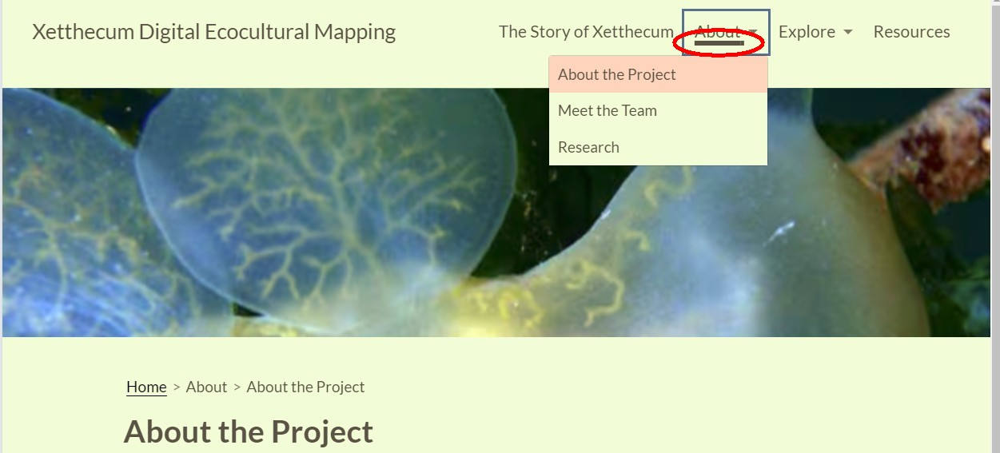
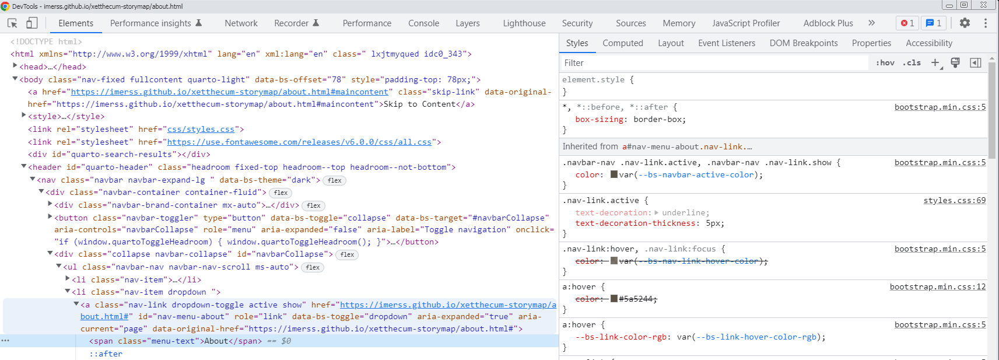

UI as Code as a named slogan originated in the context of Dart’s Flutter UI toolkit created by Google. It is centrally described by Bob Nystrom in this thoughtful posting Marking Dart a Better Language for UI. I see it as part of a wider trend in many environments to express designs in general-purpose programming language code rather than configuration languages with less expressive power. For example, ESLint’s flat config system introduced in 2022 moves its previous JSON-based linting configuration into JavaScript code.
Moves towards expression in code bring several advantages, of kinds discussed by Gilad Bracha in his 2014 posting A DOMain of Shadows. Configuration languages as they grow in complexity tend to evolve into “shadow domains” aping various constructs from programming languages, typically with inferior usability and regularity to the “real” (as Gilad calls them) programming language constructs which they are shadowing.
Bob discusses a number of powerful patterns for capturing various kinds of UI variations succinctly as programming language syntax in his posting. By aiding readability and concision these can helpfully close up the gap between design and expression and greatly increase the efficiency of UI developers.
UI as code harbours assumptions
I feel that the “X as Code” initiatives encode a number of assumptions about the development process, the relationships between users and developers and the ways they are embedded in community and economic structures that may not always be justified. These assumptions are rarely clearly articulated and may not always hold.
To explore these assumptions I want to take a little journey through a seemingly innocuous UI improvement I was recently tasked with.
A very innocuous-seeming design change
On the face of it, the task is extremely simple. Dana Ayotte, our UX designer on the Xetthecum ecocultural mapping project, noticed that the brown underline bar was not appearing consistently on subpages of our nav bar, now that several of them had submenus. The screenshot below shows the desired UI state, with the “About” menu link highlighted, even though the overall page navigation is to a page on the submenu, “About the Project”.

This menubar turns out to be a component rendered as part of the Quarto publishing system, a prominent platform in the R language ecosystem that many of our colleagues in IMERSS are well versed in. Quarto uses an interesting architecture where a captive instance of Deno, a JavaScript runtime, is used to produce a server-side DOM using a TypeScript plugin architecture, whose markup is then woven (“knitted”) together with output from R markdown’s standard document publication chain based on pandoc, a very popular document converter written in Haskell. Quite the polyglot system, some of which is helpfully sketched out in this Stack Overflow answer.
As it turns out, the relevant piece of code producing the nav-link nodes in the dropdown is part of the TypeScript
implementation of Quarto’s navigation component embedded in its `website’ project type,
held here in GitHub.
To give a flavour of this code, I reproduce a snippet here:
552 // latch active nav link
553 const navLinks = doc.querySelectorAll("a.nav-link");
554 for (let i = 0; i < navLinks.length; i++) {
555 const navLink = navLinks[i] as Element;
556 const navLinkHref = navLink.getAttribute("href");
557
558 const sidebarLink = doc.querySelector(
559 '.sidebar-navigation a[href="' + navLinkHref + '"]',
560 );
561 // if the link is either for the current window href or appears on the
562 // sidebar then set it to active
563 if (sidebarLink || (navLinkHref === href)) {
564 navLink.classList.add("active");
565 navLink.setAttribute("aria-current", "page");
566 // terminate (only one nav link should be active)
567 break;
568 }
569 }
This is a 16-line snippet from the 1600 line file website-navigation.ts.
It clearly seems prohibitive to fork the entire file (or indeed, possibly the entire project type) in order to insert our tiny tweak to this rendering logic. Before we decide on a strategy, it’s worth taking a couple of steps back to determine how we even got this far.
Jungle DOM skills
Faced with the raw feature request, directing us at some bit of the app’s UI, our task is to figure out which bit of the implementation produces it. All things being equal1, in an “X as Code” paradigm the relationship between algorithm and output is going to be pretty opaque, but thankfully given the output being in the DOM in a web browser right in front of us we have incontestable and immediate access to its structure via the DOM inspector, a kind of tool which is mature, stable and ubiquitous. Here’s a snapshot of the DOM surrounding our link of interest:

Our “jungle skills” direct us to look for plausible landmarks and then see if raw text searching will help us locate
matching bits of implementation in the source code2. This directs our attention to the nav-link CSS class which
indeed occurs in only a few places in the quarto codebase, quickly narrowed down to the site above.
In this case we’ve been saved by quite a few aspects of openness and malleability built into typical (but not all) patterns of web development. Firstly, the CSS class names were highly readable, which can’t be taken for granted in highly optimised CSS build systems such as used in CSS modules, resulting in the kind of “div soup” reported in Twitter’s rendered markup.
Secondly, the source code was provided for the underlying framework (Quarto) and it consisted of DOM manipulation as would have been done on the client, expressed against a server DOM, and thirdly, we have the ubiquitous DOM inspector to help us out.
Putting it all together
Putting all of these aspects together gives us a clear route to a wholly acceptable fix by injecting a small snippet of plain JavaScript code which executes as the page starts up, navigating to the same landmarks in the DOM, correlating the structure of different parts of the page together and matching the actions of the server DOM manipulation:
1const breadholder = document.querySelector(".quarto-page-breadcrumbs")
2if (breadholder) {
3 const breadcrumbs = [...breadholder.querySelectorAll(".breadcrumb-item a")];
4 const texts = breadcrumbs.map(a => a.innerText).map(text => text.trim());
5
6 const navholder = document.querySelector(".navbar-nav");
7 const navLinks = [...navholder.querySelectorAll(".nav-item .nav-link")];
8
9 navLinks.forEach(navLink => {
10 const linkText = navLink.innerText.trim();
11 const inCrumbs = texts.includes(linkText);
12 if (inCrumbs) {
13 navLink.classList.add("active");
14 navLink.setAttribute("aria-current", "page");
15 }
16 });
17}
The fact that we can easily inject this implementation into the already fully baked Quarto-rendered app represents the final essential aspect of openness of the web platform, that is not achievable under a “UI as Code” idiom. The performance of the resulting system isn’t quite as good as one which rendered during the build, but in practice Quarto does a fair-bit of load-time DOM manipulation itself and the additional overhead is wholly unnoticeable.
What does UI as Code assume?
Our journey was awkward and only had a reasonable ending because of values baked into the Web and its idioms by Sir Tim and his successors decades before the current wave of “UI as Code” started to break.
We can unpack some assumptions of “UI as Code” as follows:
- There is an authoritative, final design for the application provided to a developer/team who has a single point of control over the delivered product
- Our task is to maximise the expressive power (ability to express design in a maximally readable way with least typing and cognitive load) of that developer/team
These assumptions are true for a broad range of development scenarios but not the ones I am interested in. I am interested in the problem of how communities with overlapping but not precisely aligned interests can effectively own and adopt technologies without incurring unaffordable costs. The cost of forking or otherwise “vendoring” a 1600 line TypeScript implementation to make a tiny UI tweak lies clearly in the “unaffordable” camp. One could argue that the Quarto team did not follow “industry best practices” and could/should have organised their code into smaller/more focused units, but I don’t buy that. Quarto is one of the better organised codebases I’ve seen, and the developers have gone to some lengths to ensure that some kind of plugin architecture does exist (which for example is not supported by Hugo, the UI generator for this site). The use of TypeScript plus server-side DOM manipulation is a middle-of-the-road, conservative strategy which guarantees that the markup pipeline is maximally intelligible to people with eyeballs, if not to any tooling or inference. The problem as I see it is that opacity — the inability to trace results back to causes — is built in to the programming languages and tooling that we have built up in the last decades, and it is only rather anomalous (and widely derided) platforms such as the Web have sufficient malleability built in to mitigate this.
Building a Substrate
Over the next months and years I will be writing about my work building Infusion, a substrate for programming, inspired by the values of the Web, which aims to make problems of malleability which are easy to express, easy to solve by means of tools delivered along with apps themselves.
-
Thankfully, Flutter itself is also provided with a highly capable visual inspector tool delivered as part of its DevTools - but these tools are naturally not delivered wherever an app is delivered, and require it to be started in a special way. ↩︎
-
Very similar jungle skills have had to be deployed developing the Hugo template structure underlying this website - there is a similar total lack of traceable connection between input and output. ↩︎